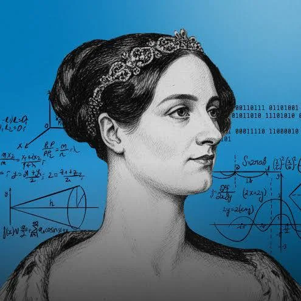

Ada Lovelace
A Primeira Programadora da História
1843
1º Algoritmo do Mundo
Visão 360°
Criou o conceito de Software
Legado
Linguagem de Programação ADA
Ada Augusta King, Condessa de Lovelace (Byron, 1815 - 1852), foi uma matemática e escritora inglesa. Ela foi a primeira a reconhecer que máquinas poderiam ter aplicações além de puro cálculos e criou o primeiro algoritmo para ser processado por uma máquina, a máquina analítica de Charles Babbage.
Durante o período em que esteve envolvida com o projeto de Babbage, ela desenvolveu os algoritmos que permitiriam a máquina computar os valores de funções matemáticas, além de publicar uma coleção de notas sobre a máquina analítica.
Por esse trabalho é considerada a primeira programadora de computadores de toda a história. Vale lembrar que ela escreveu o programa em um papel, com as instruções de como programar a máquina analítica, que nunca chegou a ser construída em seu tempo de vida. A Ada é até mesmo uma referência da cultura pop.